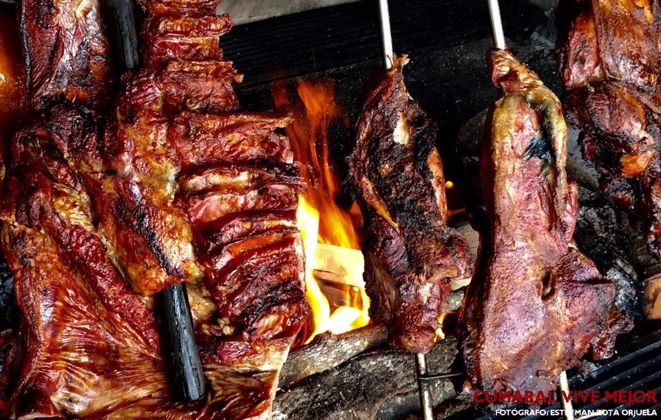

Meta
Informacion
El Meta es un departamento ubicado en la región de los Llanos Orientales de Colombia.
Es conocido por su vasta extensión de tierras planas, ríos y una rica biodiversidad.
La economía del Meta se basa principalmente en la agricultura, la ganadería y el ecoturismo.
La región es famosa por sus paisajes naturales, que incluyen sabanas, humedales y
parques nacionales como el Parque Nacional Natural Sierra de la Macarena, hogar de la
famosa Caño Cristales, conocido como el "río de los cinco colores".
La cultura del Meta está influenciada por las tradiciones llaneras, con música, danza y
gastronomía típicas de la región.
Comida Típica
La gastronomía del Meta colombiano es rica y variada, influenciada por las tradiciones
llaneras y los recursos naturales de la región. Algunos platos típicos incluyen:
- Carne a la Llanera: Un plato emblemático que consiste en carne de res asada al estilo llanero,
generalmente acompañada de yuca, plátano y arroz.

- Mazamorra: Un postre tradicional hecho a base de maíz, leche y panela, que se sirve frío.
- Arepa Llanera: Una variante de la arepa tradicional, hecha con maíz pilado y a menudo rellena
con queso o carne.

- Sopa de Gallina Criolla: Una sopa nutritiva hecha con gallina criolla, verduras y hierbas aromáticas.
- Chigüiro Asado: Carne de chigüiro (capibara) asada, una delicia típica de la región llanera.
Turismo
El Meta colombiano ofrece una variedad de atractivos turísticos para los visitantes interesados en la naturaleza y
la cultura llanera. Algunos de los principales destinos turísticos incluyen:
- Parque Nacional Natural Sierra de la Macarena: Un área protegida que alberga una gran
diversidad de flora y fauna,
ideal para el ecoturismo y la observación de aves. Es famoso por el Caño Cristales,
conocido como el "río de los cinco colores".

- Villavicencio: La capital del Meta y punto de entrada a los Llanos Orientales, conocida
por su mercado de artesanías y su
proximidad a la naturaleza.
- Parque Los Ocarros: Un parque zoológico ubicado en Villavicencio que alberga especies
nativas de la región llanera.
- Caño Cristales: Un río famoso por sus aguas de colores vibrantes, que van desde el rojo
hasta el verde y el azul,
debido a la presencia de plantas acuáticas endémicas.
Economia
La economía del Meta colombiano está principalmente basada en actividades como la
agricultura, la ganadería, el ecoturismo y la explotación de recursos naturales.
La agricultura es una actividad importante en la región, con cultivos como arroz,
maíz, yuca y plátano. La ganadería, especialmente la cría de ganado bovino, es otra
actividad económica clave, con grandes extensiones de tierras dedicadas a la pastura.